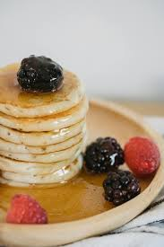

Fluffy Pancake Recipe

Description
A recipe for light and fluffy pancakes, subtle, moist and satisfying. Top with whipped cream and drizzle with maple syrup for a transcendental mouth experience.
Ingredients
- 135g plain flour
- 1 tsp baking powder
- 1/2 tsp salt
- 2 tbsp caster sugar
- 130ml milk
- 1 large egg, lightly beaten
- 2 tbsp melted butter(allowed to cool slightly), plus extra for cooking and then more for serving. Basically a shi*tload of butter
Method
- Sift the flour, baking powder, salt and caster sugar into a large bowl. In a separate bowl or jug, lightly whisk together the milk and egg, then whisk in the melted butter.
- Pour the milk mixture into the flour mixture and, using a fork, beat until you have a smooth batter. Any lumps will soon disappear with a little mixing. Let the batter stand for a few minutes.
- Heat a non-stick frying pan over a medium heat and add a knob of butter. When it's melted, add a ladle of batter (or two if your frying pan is big enough to cook two pancakes at the same time). It will seem very thick but this is how it should be.
- Wait for about 3 minutes until the top of the pancake begins to bubble, and the edges begin to set. Flip it over and cook for another two minutes until both sides are golden brown and the pancake has risen to about 1cm/½in thick. If the pancake is too dark, reduce the heat slightly for the next round.
- Repeat until all the batter is used up. You can keep the pancakes warm in a low oven, but they taste best fresh out the pan.
- Serve with lashings of real maple syrup and extra butter, if you like.
Home